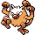

#056
Mankey
Fighting
Abilities: Vital Spirit, Anger Point, Defiant
Base stats BST 305
HP40
Attack80
Defense35
Speed80
Sp. Atk35
Sp. Def35
Evolution
dbbw EVOLVE_LEVEL, 28, PRIMEAPELevel-up learnset
LevelMoveType
Lv. 1Focus EnergyNormal
Lv. 1LeerNormal
Lv. 1Low KickFighting
Lv. 1ScratchNormal
Lv. 5Fury SwipesNormal
Lv. 8Mud SlapGround
Lv. 13Karate ChopFighting
Lv. 17Seismic TossFighting
Lv. 20SwaggerNormal
Lv. 23Cross ChopFighting
Lv. 29Skull BashNormal
Lv. 32Night SlashDark
Lv. 35Close CombatFighting
Lv. 38ThrashNormal
Lv. 41U-turnBug
Lv. 44ScreechNormal
Lv. 47OutrageDragon
Lv. 50Close CombatFighting